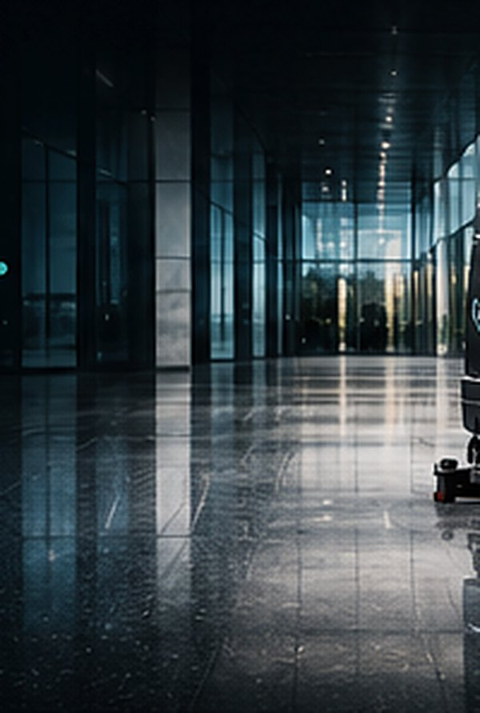
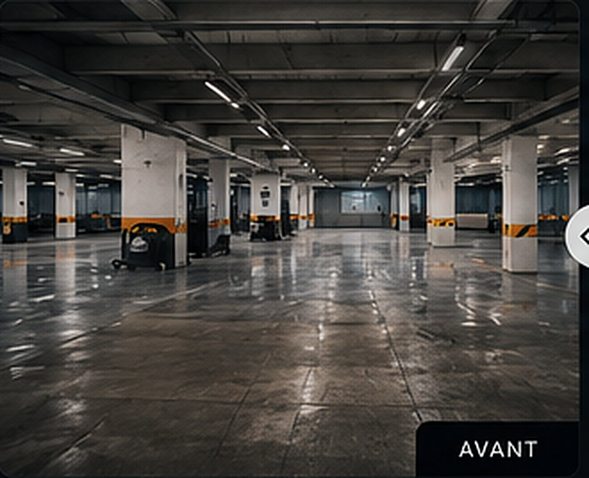

Parkings[exemple]
Parking souterrain, 380 places
Strasbourg · 9 500 m² · balayage, autolaveuse et haute pression en 2 nuits

Chaque chantier est photographié avant et après notre passage. Faites glisser la poignée pour comparer.
6 chantiers
Strasbourg · 9 500 m² · balayage, autolaveuse et haute pression en 2 nuits

AvantAprèsSchiltigheim · 650 m² · cristallisation du sol et vitrerie intérieure

Obernai · 2 800 m² · dégraissage des sols pendant l’arrêt technique

AvantAprèsIllkirch-Graffenstaden · 120 places · campagne annuelle haute pression

Colmar · 1 200 m² · entretien quotidien avant ouverture au public

Mulhouse · 6 000 m² · autolaveuse autoportée en horaires décalés
Visuels de démonstration : l’état « Avant » est simulé à partir des photos d’ambiance. À remplacer par de vrais couples de photos, même lieu et même cadrage [à confirmer]
Un seul interlocuteur pour nos trois résidences, et des parkings enfin propres après chaque campagne haute pression. Les copropriétaires l’ont remarqué dès la première fois.
En 2025
1 200 interventions
ponctuelles et régulières
380 000 m²
entretenus chaque mois
Valeurs fictives [à confirmer]
Visite gratuite et devis détaillé sous 48 h. Réponse à votre demande sous 24 h ouvrées.